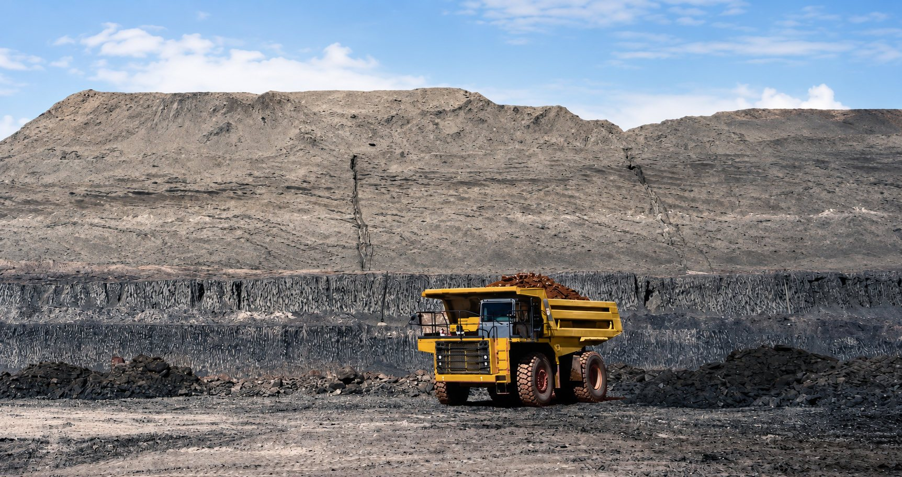
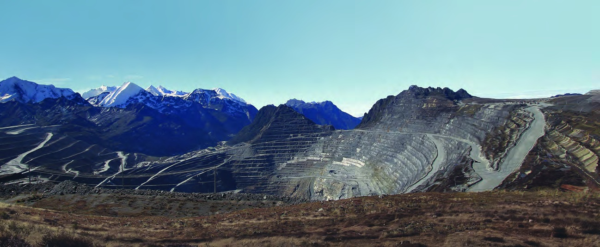
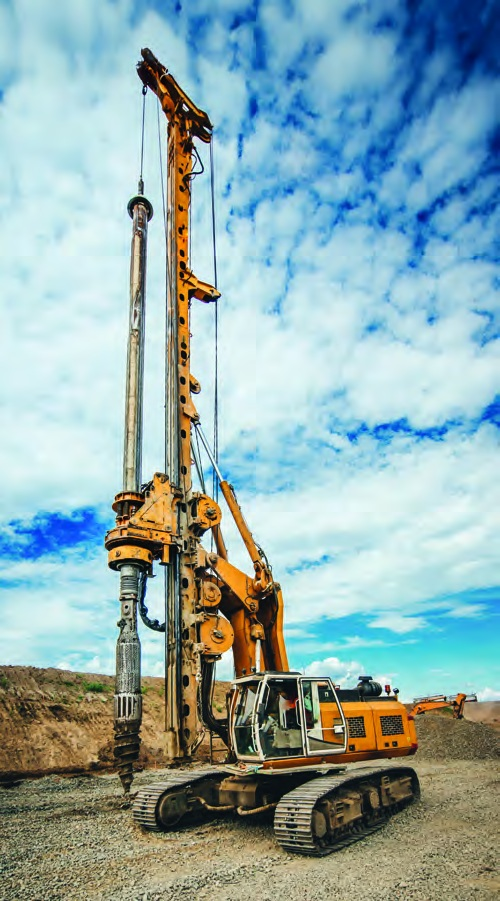
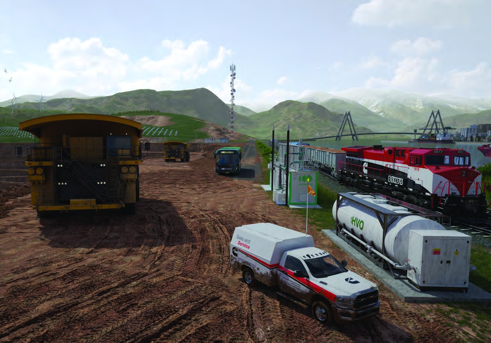
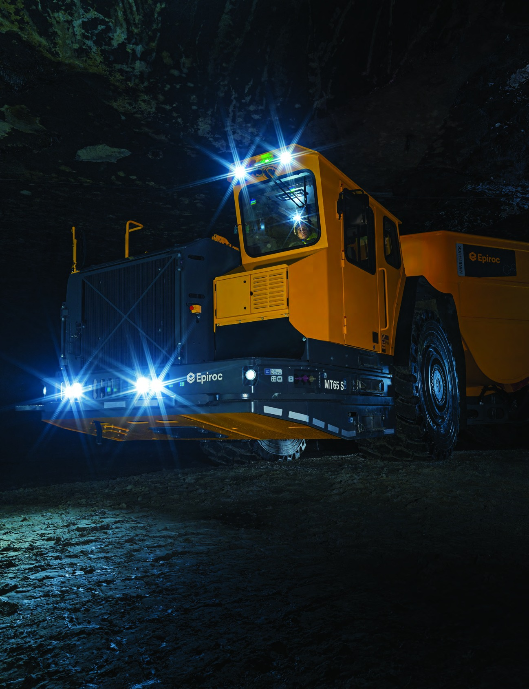
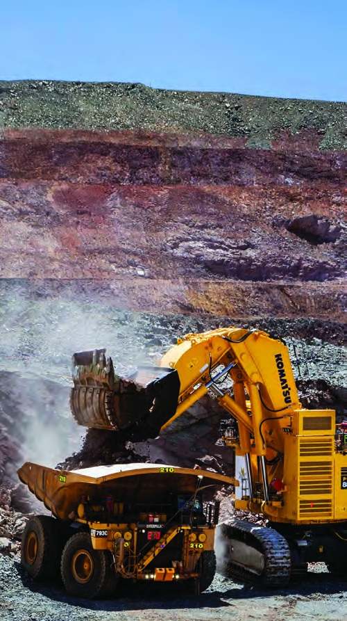
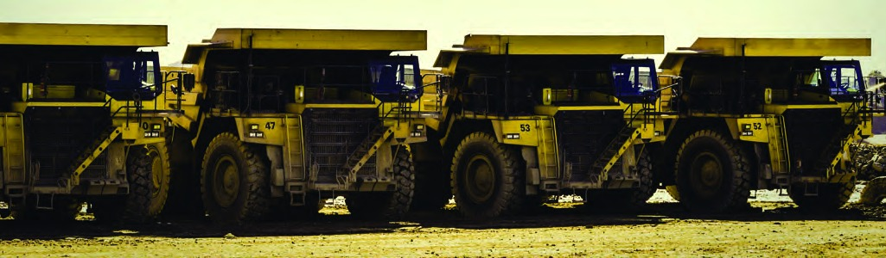

经验驱动选型Inspired by experience
矿山发动机不是孤立部件，它和整机布置、液压系统、冷却风道、燃油品质和保养方式共同决定可靠性。A mining engine is never isolated; reliability depends on machine layout, hydraulics, cooling, fuel quality and service practice.
矿用与油气钻井动力Mining & drilling power
矿区位置、海拔、温度、粉尘和作业节奏各不相同，动力系统必须在这些差异里保持稳定输出。广州市泽康松特机械设备有限公司面向矿卡、挖掘机、装载机、钻机与油气钻井系统，提供发动机选型、参数确认和询盘支持。 Mining sites vary by altitude, temperature, dust and duty cycle. Guangzhou KST Mechanical Equipment Co., Ltd supports engine selection, specification review and inquiry coordination for haul trucks, excavators, loaders, drills and oil and gas power systems.
从 74 hp 的紧凑平台到 4400 hp 的高马力平台，选型不只看功率，还要结合持续负载、冷却条件、排放要求、维护窗口和备件供应。From 74 hp compact platforms to 4400 hp high-horsepower engines, selection must consider duty, cooling, emissions, service windows and parts support.
让设备在该工作的时间工作。Keep the machine productive when the site needs it most.


矿山发动机不是孤立部件，它和整机布置、液压系统、冷却风道、燃油品质和保养方式共同决定可靠性。A mining engine is never isolated; reliability depends on machine layout, hydraulics, cooling, fuel quality and service practice.
高海拔、低温、热区和高粉尘现场，对进气、散热和扭矩储备都有更高要求，参数确认要提前完成。High altitude, cold starts, heat and dust change the intake, cooling and torque reserve assumptions behind every specification.
设备停机的成本远高于零件价格。我们把型号、配置、交期和服务响应放在同一张选型表里看。Downtime costs more than parts. Model, configuration, lead time and support response belong in the same selection conversation.

Pit to portPit to port
发动机选型需要覆盖生产、运输、服务和交付全流程。我们帮助客户在型号范围、输出曲线、排放策略和后续维护之间找到平衡。Engine selection should cover production, haulage, service and delivery. We help balance model range, output curve, emissions strategy and lifecycle support.


地下矿山Underground mining
地下设备对尺寸、散热、可靠性和维护便利性都更敏感。选型时需要把安装空间、通风条件和连续作业节奏一起核对。Underground duty makes package size, cooling, reliability and service access critical. Installation envelope, ventilation and duty cycle are reviewed together.
矿区动力系统的价值，不只在额定功率，更在 24/7 工况下持续可用。For mining operations, power matters most when it stays available through 24/7 duty.
无论项目在油田、矿山还是港口，我们都围绕设备清单和现场条件提供选型沟通。Whether the project is at an oilfield, mine or port, selection starts with the equipment list and site conditions.
高马力发动机是长期资产，前期确认排量、排放、维护周期和备件路径，能减少后期反复。High-horsepower engines are long-life assets; confirming displacement, emissions, service intervals and parts path early reduces rework.

Legendary enginesLegendary engines
版式参考矿用手册中的型谱页：横向发动机阵列先建立型号范围，再用参数表承接选型。A handbook-style engine lineup establishes the model range before the specification table.


按参数选型Select by specs
| Model | 排量Displacement (L) | 功率Power (hp) | 扭矩Torque (lb-ft) | 排放Emissions |
|---|---|---|---|---|
| F3.8 | 3.8 | 74-173 | 295-457 | Tier 4F / Stage V |
| B4.5 | 4.5 | 121-200 | 369-575 | Tier 4F / Stage V |
| B6.7 | 6.7 | 155-326 | 550-1014 | Tier 4F / Stage V |
| L9 | 9 | 275-430 | 1085-1361 | Tier 4F / Stage V |
| X12 | 12 | 350-500 | 1250-1700 | Tier 4F / Stage V |
| X15 | 15 | 525-565 | 1650-2050 | Tier 4F / Stage V |
| QSK19 | 19 | 506-800 | 1775-2250 | Tier 4F / Stage V |
| QSK23 | 23 | 760-950 | 2558-3045 | Tier 4F / Stage V |
| QST30 | 30 | 950-1500 | 3414-4877 | Tier 4F / Stage V |
| QSK38 | 38 | 1086-1350 | 3590-4320 | Tier 4F / Stage V |
| QSK50 | 50 | 1500-2000 | 5044-5805 | Tier 4F / Stage V |
| QSK60 | 60 | 1875-2850 | 6169-8726 | Tier 4F / Stage V |
| QSK78 | 78 | 3500 | 10157 | Tier 4F / Stage V |
| QSK95 | 95 | 3800-4400 | 11244-13020 | Application dependent |
选型支持Selection support

适配矿卡、挖掘机、装载机、钻机及油气钻井动力系统。For haul trucks, excavators, loaders, drills and oil and gas power systems.
发送询盘Send inquiry